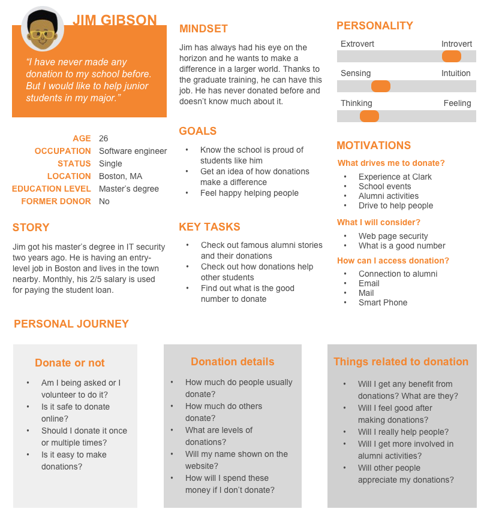
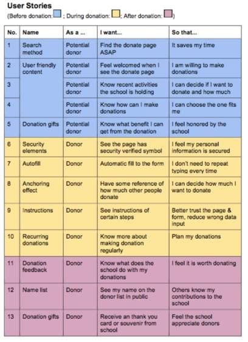
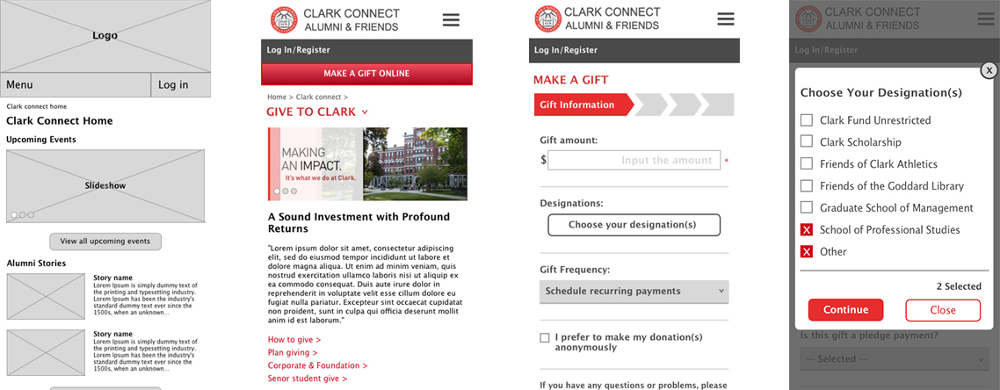
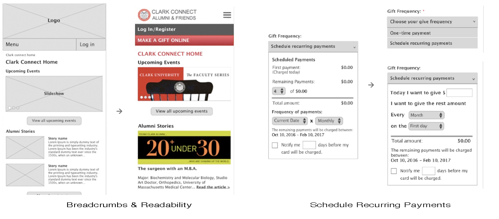

Clark University Give Page Redesign UX project
Clark University Give Page Redesign
Philanthropy is always key in the private university world, just like their life blood. To connect alumni and friends for sustaining their generosity for a lifetime, Clark Universiy created the site ClarkConnect in 1990.
The donation page and the form is the central part of ClarkConnect. However, the current page is outdated. It was not build from user centered perspecitve, and It is a re-design of Clark Give page and Give form from a mobile first perspective. It is also a project I worked on at Srpingboard UX Design Workshop.
Clark Connect site, which connects alumni and friends for donations and activities, needs a change to catch up the mobile using trend.
Problems:
The current site is more about presenting statements about donation, instead of encouraging people to donate. The give experience is improvable on mobile.
Solution:
Start from user centered design, and re-build a smooth and pleasant experience on giving.
User Research
Interview and survey
From the interactions with more than 30 people, I got some insights of how users think of the donation and the website. Some are reasonable, some a surprising and some are confusing.
Not all donors are online donors!
There are many ways to donate. Big donors or senior donors never make donations online. They would call the school or contact a specialist.
The online form is specially designed for younger generation.
No type-in! Let’s click!
Yes, it is a big difference between laptop and mobile. People tab, people slide, people drag, and they even speak, to avoid typing and spelling as much as possible.
“Give me a reason!”
“If you want me to do something, give me a reason! No matter that’s helping others, getting a souvenir or just make me feel emotional. I want a trigger to give out my money.”
“It’s hard to continue”
It is surprising that a participant felt hard to continue when he is using the current giving form. He stopped because he couldn’t find instructions when he needed, and the form did not seem safe to him.
Opposite results from interviews and surveys
How much people would like to donate is mysterious.
In both interviews and surveys, I gave people some amount of money to choose, and also mentioned they can donate any amount they like. The result was, all the people I interviewed would give a number in their mind, some changed their number when I asked twice; and over 90% people in the survey would choose a given number.
It is very interesting. And I would test this again in the usability testing part.
Competitive Analysis
In the competitive analysis, I chose 3 schools (Worcester Polytechnic Institute, Skidmore College and Brandeis University) and compared strengths and weakness. The competitors here are not alternative business or organizations that alumni would spend money on or donate. They are partner schools with the same goal as Clark.
From the analysis, I got these inspirations:
- A standard form doesn’t need to show every detail, but it should clearly indicate people to choose, to click, to go to the next page, or to fix.
- A good look and feel is significant to the success of donations. Some people give up donate when they see the form.
- Donors need to feel safe. Professional designing, no broken links, safety elements and reminder keep donors complete the donation form
Empathy Map and Persona
Two goal-based user patterns emerged from the interviews and questionnaires. They are Jim and Jane.
Jim got his master’s degree in IT security two years ago. He got a decent job after graduation and has a student loan to pay off. Jim loves Clark and would like to do something for the school.
Jane graduated 10 years ago from Clark. She is very sociable and always glad to help people. She donated to Clark before and considering making regularly donations every once a while.

MVP and User Stories
User stories are for keeping wireframes and visual design focused on user needs, there are 13 user stories through the whole donation process. The potential donor’s stories are as important as real donor’s stories.
MVP features are not only tied to each user stories, but also results from the user test.

User Flow
I started with low-fidelity sketches and worked up to high-fidelity wireframes. Then create the prototype and put it on InVision for usability testing.

Wireframes and Clickable Prototype
I started with low-fidelity sketches and worked up to high-fidelity wireframes. Then create the prototype and put it on InVision for usability testing.

Usability Testing
Usability tests were conducted in-person with 5 Clark alumni. From the test and feedback, I categorized problems from deadly to dispensable and improved the prototype.
Page – Breadcrumbs
It is nice to have breadcrumbs on the page, but first, they look small and hard to press for fat fingers; second, this site is not that big that we have to put breadcrumbs on each page. Instead, when people click the menu, they will easily find where they are.
Page – Readability
The font size is small for senior users. It is better not to put a picture and a paragraph at the same row.
Form – Choose your designation button
Even though designation is a required field, participants ignored it and jumped to the gift frequency directly. It was because the button was white, they all attracted by the gray dropdown menu.
Form – Distraction
When users are filling out the form, you don’t want them to be distracted by other things. Log in/register will bring them out of the process.
